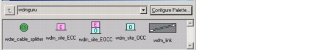
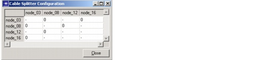
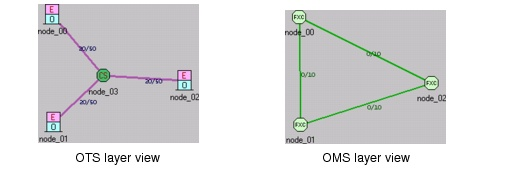

Creating a Baseline Scenario > Configuring Cable Splitters and Fiber Routes > Cable Splitter
Cable Splitter
A cable splitter is a bifurcation point for optical fiber pairs; it allows links to share a common conduit before they take different directions. To add a cable splitter to your network, open the object palette and drag the "CS" icon into the network.
Figure 3-17 Cable Splitter Model in the Object Palette

Procedure 3-4 Creating OMS Links Using a Cable Splitter
- If you have not already done so, define the network topology, including all cable splitters and OTS links between nodes.
- Click the Show OTS Layer menu button to switch to the OTS layer view.
- Right-click on the cable splitter and choose Configuration.
The Cable Splitter Configuration dialog box appears. This window shows a matrix that specifies the number of fiber pairs to be configured between the nodes adjacent to the cable splitter.
Figure 3-18 Cable Splitter Configuration Dialog Box

- Enter the number of fibers you want to configure for each node pair.
Note the following rule:
- Click Close to return to the Project Editor.
End of Procedure 3-4
After you configure a cable splitter, new links appear in the OMS layer. Figure 3-19 shows a cable splitter for which 10 fiber pairs have been configured between each of the adjacent node pairs. As a result, three links are created in the OMS layer; each link has a capacity of 10 fiber pairs.
Figure 3-19 Creating OMS Links Using a Cable Splitter: Example

| Home © 1987-2007 OPNET Technologies, Inc. All Rights Reserved. This software may be covered by one or more U.S. Patents. See complete patent notice in the Legal Notices section. OPNET Support Center |